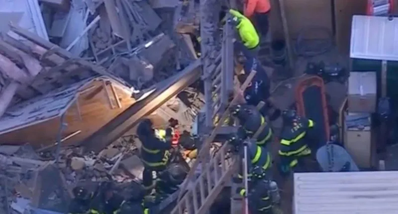

OKpolítico
OKpolíticoSuman ocho muertos y 17 heridos tras el derrumbe de un edificio en Nueva York

El colapso de un edificio de apartamentos en Brooklyn, el 12 de noviembre de 2026, dejó ocho muertos y 17 heridos, provocando una investigación exhaustiva por parte de la ciudad y la orden de inspecciones en cientos de obras relacionadas.
Compartir por WhatsAppActualización 09:49 h
El edificio, de tres pisos ubicado en el distrito de Brooklyn, se derrumbó el jueves 12 de noviembre de 2026 mientras trabajadores de construcción excavaban en un lote adyacente. El colapso provocó la muerte de ocho personas y dejó 17 heridas, según las autoridades locales. La escena del desastre se convirtió en el centro de una operación de rescate que duró varios días, culminando cuando el último sobreviviente fue sacado del escombros el viernes 13 de noviembre.
La causa inmediata del derrumbe se atribuye a la excavación que alteró la estabilidad del edificio. La investigación también contempla la revisión de los permisos de construcción y la supervisión de la obra.
✉️ Recibe lo importante del día en tu correo. Suscríbete gratis →El edificio era propiedad de una compañía de desarrollo inmobiliario que había iniciado renovaciones en 2024. Los residentes y vecinos expresaron preocupación por la seguridad de las estructuras en la zona, donde se habían reportado problemas de cimentación en años anteriores. El incidente ha reavivado el debate sobre la regulación de obras en áreas densamente pobladas y la necesidad de inspecciones más rigurosas.
Hasta la fecha, la ciudad ha detenido las operaciones de rescate y se sigue buscando sobrevivientes, ya que no se ha confirmado que todas las víctimas hayan sido encontradas. La investigación seguirá enfocándose en determinar la responsabilidad legal y técnica del colapso, mientras la administración municipal trabaja en medidas preventivas para evitar futuros incidentes.
Actualización 08:12 h
El derrumbe ocurrió en el número 1321 de la avenida Flatbush, cuando un edificio residencial de tres pisos cedió sobre una obra de excavación contigua. Se registraron ocho víctimas mortales y 17 heridos. El alcalde Zohran Mamdani confirmó que entre los fallecidos había migrantes mexicanos.
El edificio había sido objeto de varias infracciones de construcción. En marzo el Departamento de Edificios (DOB) ordenó detener los trabajos por demoliciones sin protección adecuada; en abril se constató que la orden seguía violada, y en mayo se levantó la restricción tras subsanar las faltas. La obra contaba con permiso para un edificio de tres pisos, aunque existían planes no aprobados para una torre de nueve niveles.
El colapso también provocó la caída de la pared de un edificio colindante. Los bomberos de Nueva York (FDNY) desplegaron más de 250 unidades de rescate.
El alcalde Mamdani exigió una investigación exhaustiva. El DOB ha iniciado una inspección de los sitios de construcción en la zona y ordenó la suspensión total de trabajos en el predio de la obra contigua.
Las autoridades locales han pedido a la población evitar la zona del desastre para no obstaculizar las maniobras de rescate.
El caso ha generado preocupación sobre la seguridad de los proyectos de construcción en la ciudad y la protección de los migrantes que residen en edificios residenciales. La comunidad mexicana en Nueva York ha expresado su solidaridad con las familias afectadas.
La investigación sigue en curso y se espera que el Departamento de Edificios y la policía publiquen un informe definitivo sobre las causas del derrumbe y las responsabilidades correspondientes.
Actualización 00:18 h
El colapso ocurrió a las 4 p.m. en la intersección de las avenidas Bedford y Flatbush, en el barrio de Flatbush, Brooklyn. El edificio, construido en 1930 y sin ascensor, tenía cuatro viviendas y un local comercial. La caída se produjo sobre una obra contigua donde se realizaban trabajos de excavación.
El Departamento de Bomberos de la ciudad (FDNY) informó que el derrumbe dejó ocho personas fallecidas, entre ellas niños, y 19 heridos, de los cuales cuatro están en estado crítico. Los equipos de rescate continuaron las operaciones de búsqueda y extracción de cuerpos durante la noche, mientras una tormenta se acercaba.
El motivo del colapso se relaciona con trabajos de demolición ilegales en el terreno contiguo.
El alcalde de Nueva York, Eric Adams, expresó su desconsolación y pidió a los neoyorquinos que recuerden a las víctimas y a los heridos. El Departamento de Edificios está investigando la causa del derrumbe y revisando los registros de alquiler para determinar si hay personas desaparecidas.
Las autoridades continúan las labores de rescate y la búsqueda de víctimas, mientras se teme un segundo derrumbe en el edificio contiguo. Se espera que el trabajo se extienda hasta la próxima semana, con la ayuda de la Cruz Roja y otros servicios de emergencia.
El incidente ha generado preocupación sobre la seguridad de los edificios antiguos en la zona y la supervisión de los trabajos de demolición en la ciudad. Se espera que la investigación determine las responsabilidades y se tomen medidas para evitar futuros accidentes.
Labores de rescate y saldo de víctimas
El colapso ocurrió alrededor de las 16:00 horas del miércoles cerca de la intersección de las avenidas Bedford y Flatbush. Según el Departamento de Bomberos de la Ciudad de Nueva York (FDNY), más de 250 socorristas fueron desplegados en la zona para remover escombros, utilizando herramientas eléctricas, drones y perros adiestrados para localizar a posibles sobrevivientes entre los restos de ladrillos y madera.
El alcalde Eric Adams confirmó que, además de los dos fallecidos, al menos 10 personas fueron trasladadas a hospitales con lesiones de diversa gravedad. De acuerdo con la comisionada del Departamento de Bomberos, Laura Kavanagh, entre los 19 pacientes atendidos en total se encuentran siete menores de edad; cuatro personas permanecen en estado crítico y 12 en condición estable.
Investigación sobre las causas
La estructura afectada, un edificio de uso mixto con locales comerciales y apartamentos, se desplomó sobre un pozo de excavación contiguo donde se realizaba un proyecto de construcción. Las autoridades del Departamento de Edificios han iniciado una investigación para determinar las causas exactas del siniestro, centrando su atención en las condiciones del sitio de obra y los registros de los permisos otorgados.
Se ha confirmado que los responsables de la obra en Bedford Avenue contaban con permisos para excavación y cimentación. No obstante, registros municipales indican que, hace siete meses, los promotores fueron multados en dos ocasiones por realizar trabajos de demolición sin las medidas de seguridad adecuadas, aunque habían logrado regularizar su situación ante los organismos reguladores en mayo pasado. Actualmente, todos los permisos de trabajo en el lugar han sido suspendidos.
Videos en redes
Videos publicados en X y difundidos por medios; OKpolítico no muestra imágenes de personas fallecidas.
Sigue viendo
- 📺 Marcelo Ebrard: De jefe de gobierno a negociador del T-MEC bajo investigación
- 📺 La caída del sistema: el expediente de la elección de 1988
- 📺 Marcelo Ebrard: De jefe de gobierno a negociador del T-MEC bajo investigación
- 📰 Fiscalías de EE. UU. responden 11 de 22 solicitudes de México por muertes bajo custodia del ICE
- 📰 EE. UU. busca entrenadores experimentados mientras la FMF evalúa a Rafa Márquez
- 📰 Tiroteo en Washington deja dos muertos, incluido el atacante, y cuatro heridos
Con información de
elmanana.com · telemundo.com · cnnespanol.cnn.com · TV4 Noticias Guanajuato · DW.com · Diario de México · Univision · Infobae · Periódico Síntesis · AP News · CNN Español · López-Dóriga Digital · Almomento.mx · Reporte Indigo · Teletica · MVS Noticias · Proyecto Puente · Oliva Radio Noticias · Sin Embargo · Bloomberg Línea · Pulso Diario San Luis · La Semana del Sur · El Universo